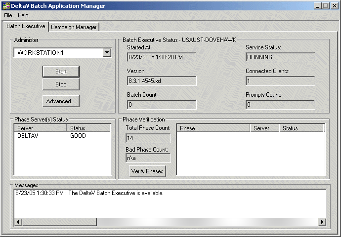

Start the Batch Executive
- Click Start > DeltaV Batch > Application Manager. The DeltaV Batch Application Manager dialog opens.
- Under the Administer section of the Batch Executive tab, click the Start button.
- Select Cold on the Choose Boot Method dialog. You are given this choice because we selected User Query as the restart method in the Batch Executive Properties dialog.
-
Wait for a few seconds until the Batch Executive is running and
the phase server status is good.

-
Click
Verify Phases.
The Batch Executive checks that all items specified in the batch configuration (phases, phase parameters, and so on) are available. There should be no Bad Phases. (If there are bad phases, first try clicking Verify Phases again. If there are still errors, go to the DeltaV Batch log file to find the errors. In Windows Explorer, go to DeltaV\DVData\Batch\Logs). If there are bad phases, you need to correct them in your configuration. Another thing to check (on the unit phase Properties dialog) is that the unit phases all have an assigned phase type of Controller. (Unit phases are the assigned phases in each blender and color unit module in the PAINT_BLEND process cell.)
- Verify the number of Bad Phases is 0 before proceeding.
- Click File > Exit.